İnteraktif Proje Örnekleri
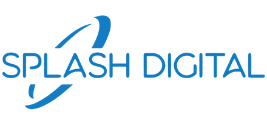
Bölüm 01
Kozmetik & Kişisel Bakım
Ürün faydasını görünür kılan, keşfi alışverişe bağlayan deneyimler.
Nivea
Serum Etkisi
Üç sekmeli kurguda kullanıcı ürün ailesini tanıyor, faydaları inceliyor ve öne çıkan özelliklerle satın alma kararına yaklaşıyor. Sade, hızlı okunan ve güven veren bir anlatım.
Çalışmayı canlı incele ↗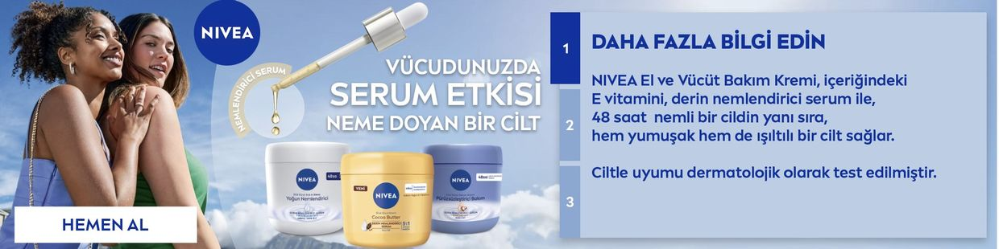
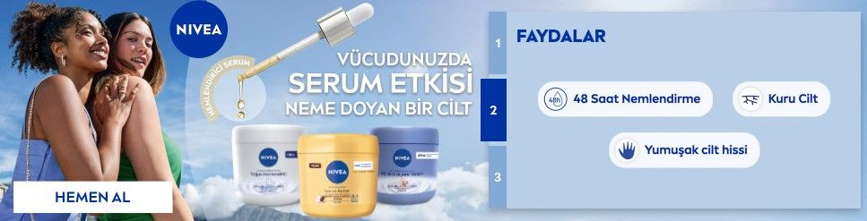
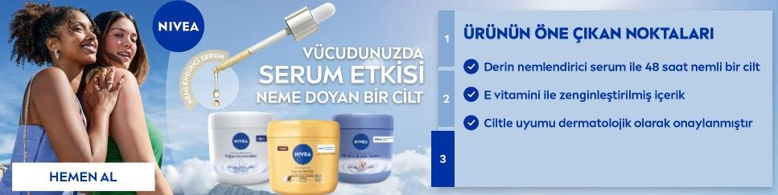
Nivea
Q10 · 10 Günde Daha Sıkı Cilt
Losyon, bronzluk ve vücut sütü sekmeleri arasında geçiş yapan kullanıcı her ürünün faydasını ayrı görüyor; “Ürün Bilgileri” paneli formülü ve kullanım önerilerini açarak keşfi satın almaya bağlıyor.
Çalışmayı canlı incele ↗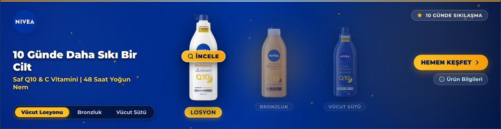
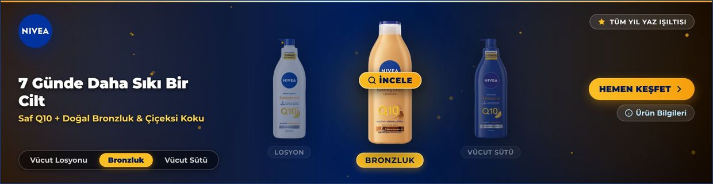
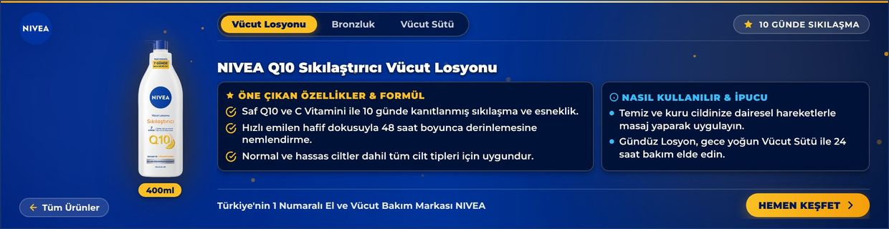
Yves Rocher
Gravity Giydirme
Tam sayfa giydirme kurgusunda merkezdeki ürün videosu gerçek kullanım anını gösterirken, çevresindeki alanlar ana faydaları ve doğallık oranlarını aktarıyor. Duygu ve bilgi aynı ekranda.
Çalışmayı canlı incele ↗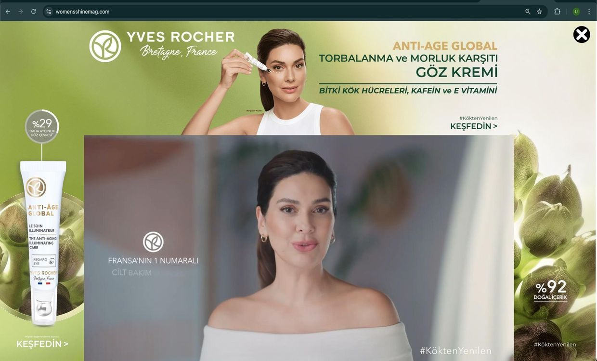
Yves Rocher
Yılbaşı Koleksiyonu
Masthead üzerinde imleci takip eden peri tozu ışıltısı, yılbaşı koleksiyonunu büyülü bir deneyime dönüştürüyor. Etkileşim, koleksiyon sayfasına yönlendiren keşif aksiyonuyla tamamlanıyor.
Çalışmayı canlı incele ↗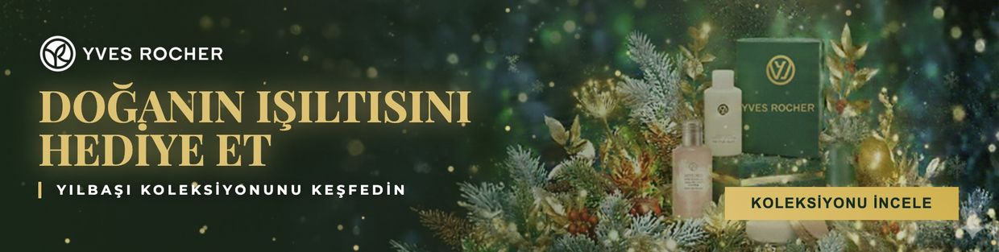
Watsons
11.11 Küpü
Kullanıcı 3B küpü sürükleyerek çeviriyor; her yüzde başka bir kategori ve o kategoriye özel 11.11 fırsatları beliriyor. Keşif, tek bir oyunsu hareketle alışverişe dönüşüyor.
Çalışmayı canlı incele ↗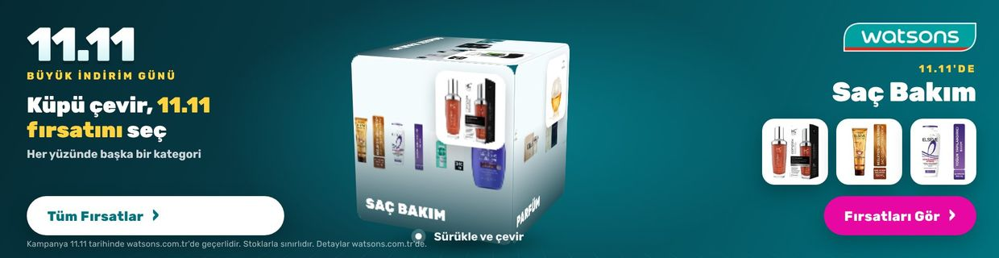
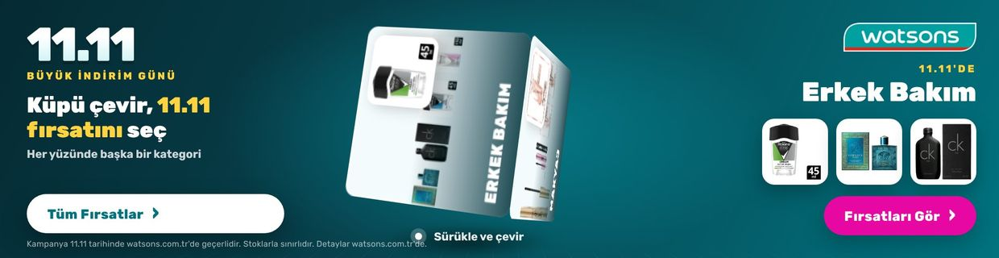
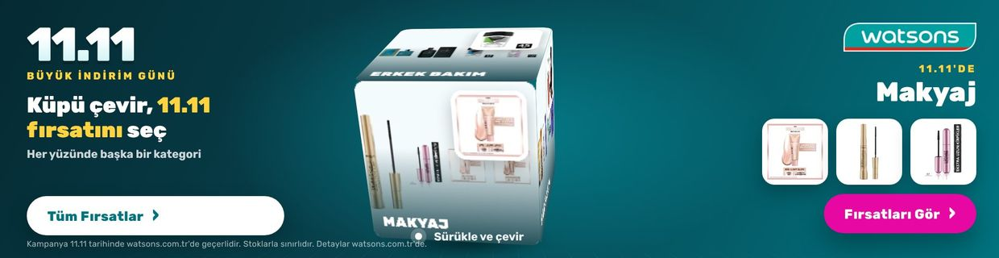
Hobby
Şampuan Serisi
Üç farklı şampuan dinamik geçişlerle sunulurken her ürünün dökülme karşıtı, kepek karşıtı ve nemlendirici faydası ayrı ayrı vurgulanıyor. “Hemen Keşfet” ile doğrudan ürün sayfasına yönlendirme.
Çalışmayı canlı incele ↗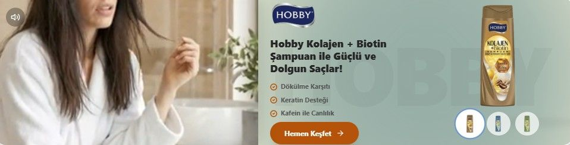
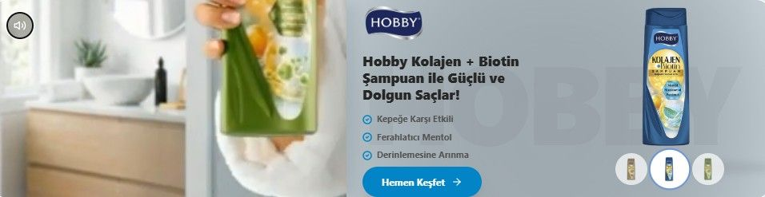
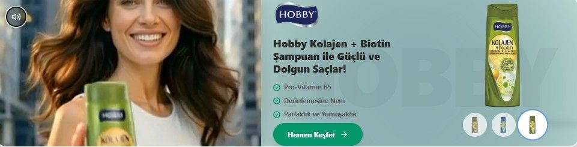
Bölüm 02
Otomotiv
Modeli ekrana taşıyan, test sürüşüne kadar uzanan sürükleyici kurgular.
Honda
Africa Twin · Kumdan Doğan
Binlerce kum tanesinden oluşan 3B parçacık efektiyle Africa Twin, kullanıcının imleciyle başlattığı fırtınanın içinden doğuyor. Deneyim keşif ve test sürüşü çağrılarıyla tamamlanıyor.
Çalışmayı canlı incele ↗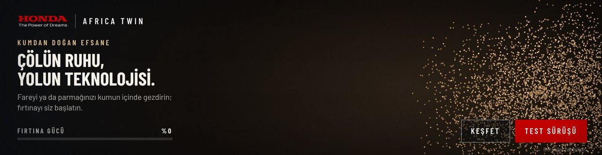
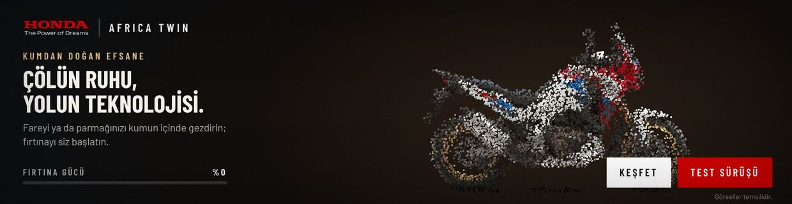
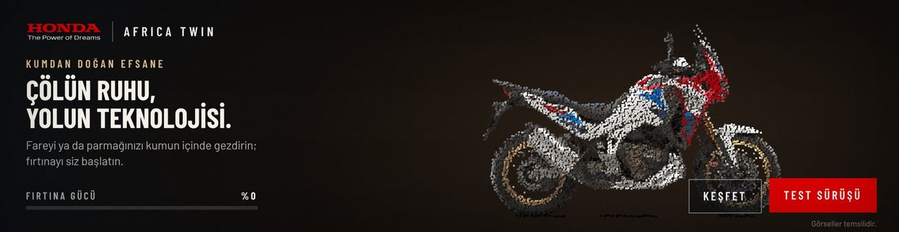
Honda
Motosiklet Günleri 2026
“Gaz ver” butonunu basılı tutan kullanıcı motorun gücünü hissediyor; kilit açıldığında etkinlik kayıt ekranı beliriyor. Etkileşim, doğrudan kayıt aksiyonunun anahtarı oluyor.
Çalışmayı canlı incele ↗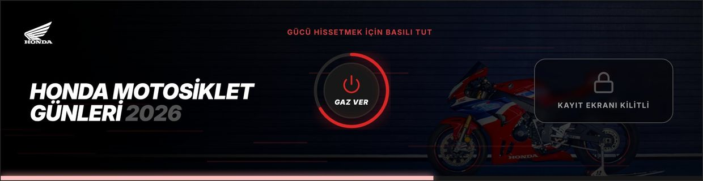
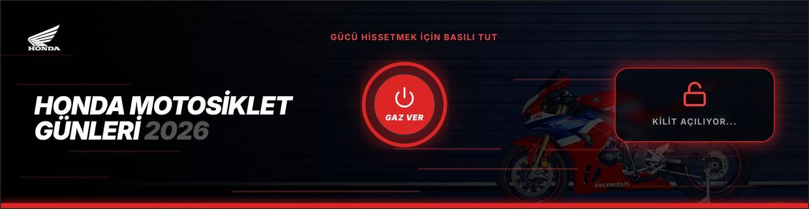
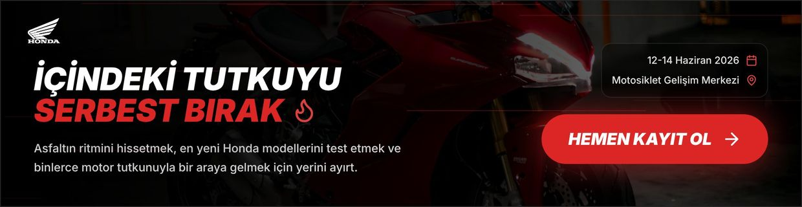
Honda
Civic
Bölünmüş ekran yapısında Civic’in iç mekânı, ön konsol teknolojisi ve dış görünümü tek kreatifte keşfediliyor. “Keşfedin” butonu deneyimi ürün sayfasına bağlıyor.
Çalışmayı canlı incele ↗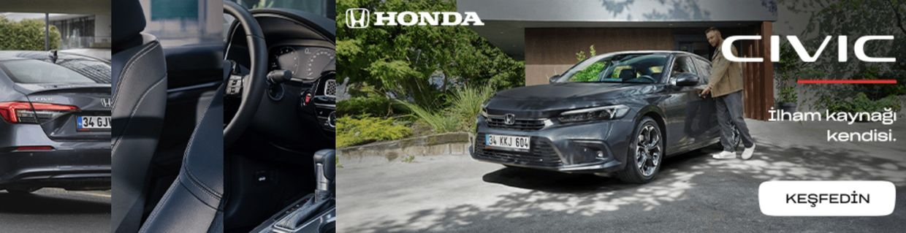
Honda
CBR500R · CB500 · NX500
Üç model aynı kreatifte yan yana: kullanıcı modelleri karşılaştırıyor, kendine en uygun olanı keşfediyor ve ilgili modelin detay sayfasına geçiyor.
Çalışmayı canlı incele ↗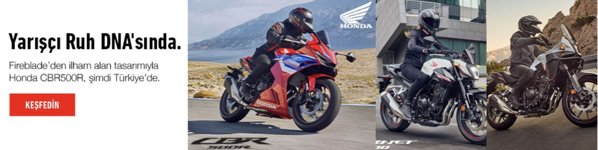
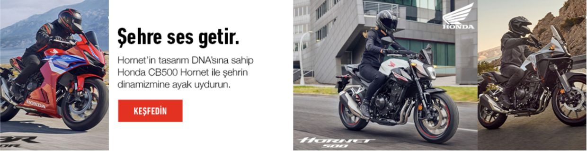
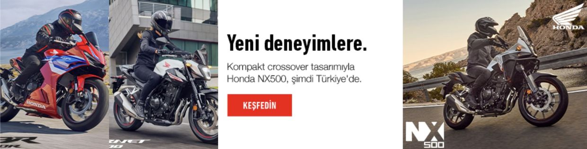
Bölüm 03
Akaryakıt & Enerji
Hizmeti sürücünün gündelik ihtiyacıyla buluşturan etkileşimler.
Aygaz
100+ Oktan
Aile, beyaz yaka, taksici ve filo yöneticisi profilleri için ayrı videolu senaryolar; tasarruf hesaplayıcı ve istasyon bulucu tek mastheadde. Her sürücü kendi hikâyesini buluyor.
Çalışmayı canlı incele ↗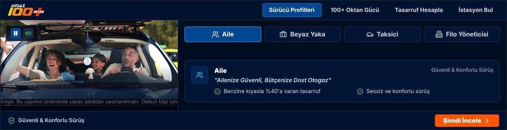
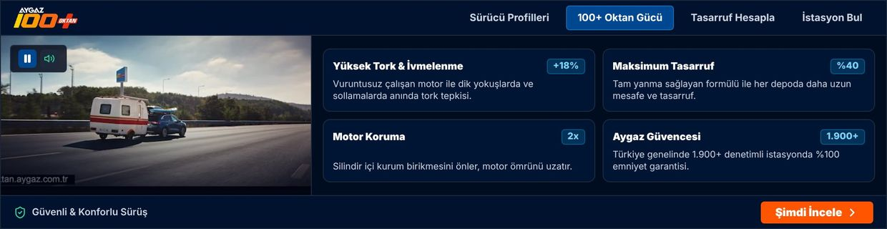
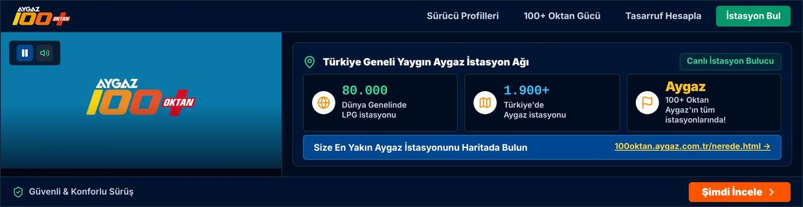
Shell
Shell WC
Sarı Shell açılışının ardından temizlik, havalandırma ve el kurutma teknolojisi kısa sekmelerle anlatılıyor. “Rotayı Oluştur” ile kullanıcı en yakın istasyona yönlendiriliyor.
Çalışmayı canlı incele ↗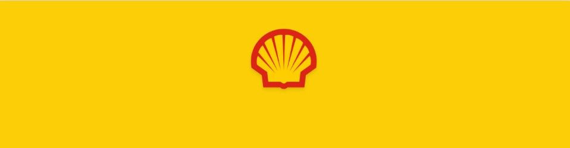
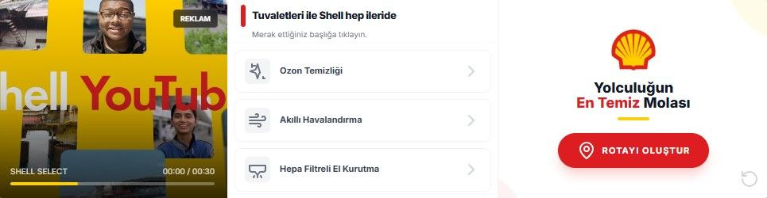
Bölüm 04
Finans & Fintek
Karmaşık teklifleri birkaç dokunuşta anlaşılır kılan finans deneyimleri.
Paribu
Kripto Dünyasına İlk Adım
Kullanıcı telefonu imleçle yönlendirip düşen coinleri yakalıyor; mini oyun portföyü dolduruyor ve yeni üyelere özel hediyeyle hesap açma çağrısına bağlanıyor.
Çalışmayı canlı incele ↗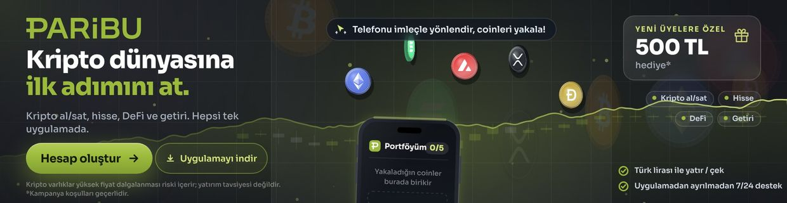
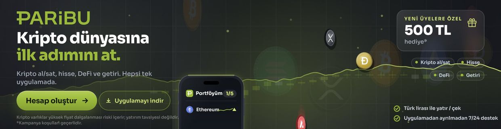
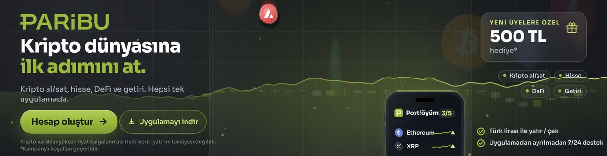
Visa
Dünya Kupası 2026
Finale kalan süreyi canlı sayan geri sayım, kupa ve uçuş temalı görsel dünyayla “10 kat mil” kampanyasını öne çıkarıyor. Sesli video kontrolü ve detay yönlendirmesi içeriyor.
Çalışmayı canlı incele ↗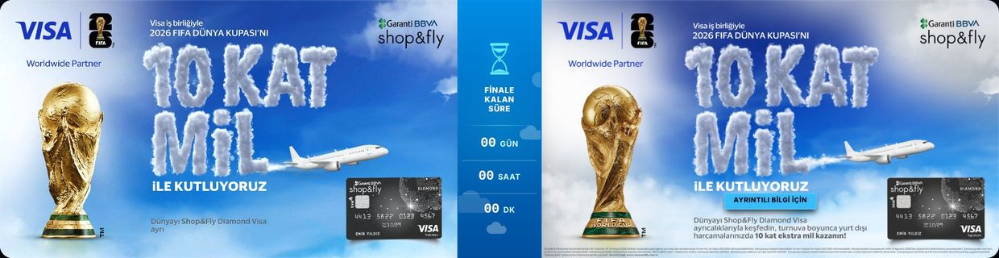
VakıfBank
Restoran Kampanyası
Kart tipine göre değişen dinamik görseller ve kartlara özel avantaj alanları; sağdaki hesaplayıcı ile kullanıcı harcamasını girip kazanacağı indirimi anında görüyor.
Canlı demo talep üzerine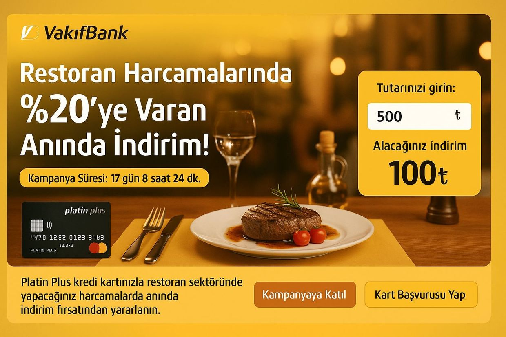
Mastercard
Ramazan & Eğitim
Tek ana görsel üzerinde imleç gezdirildiğinde Ramazan ve Eğitim tekliflerini açan katmanlar beliriyor. “Hemen Başvur” ve “Fırsatı Yakala” ile tekliflere hızlı geçiş.
Çalışmayı canlı incele ↗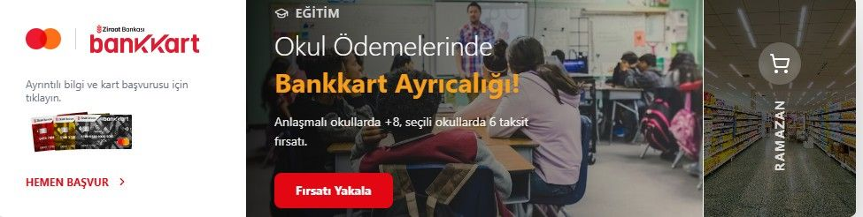
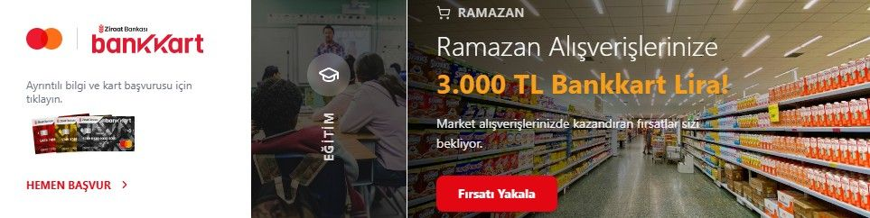
Mastercard
Affluent Ayrıcalıklar
Seyahat, gastronomi, alışveriş ve konaklama ayrıcalıkları sekmelerle detaylanıyor; premium kart avantajları dönüşüm odaklı bir başvuru akışına bağlanıyor.
Çalışmayı canlı incele ↗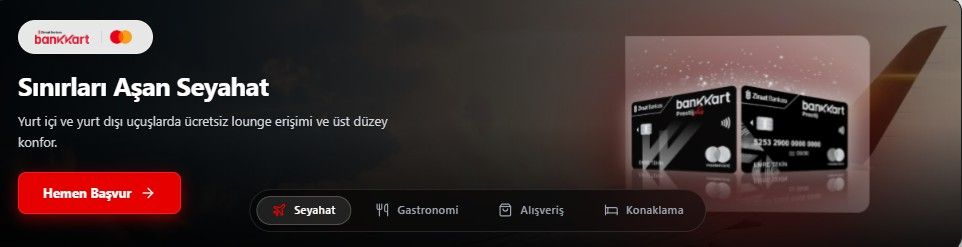
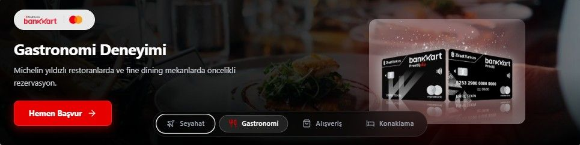
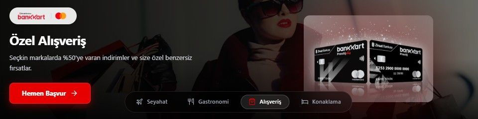
PayTR
KOBİ Çözümleri
“Tek Banka”, “Taksit Yok” gibi seçeneklerle işletmenin ihtiyacını soran akış, kullanıcıyı uygun çözüme ve başvuru formuna taşıyor.
Çalışmayı canlı incele ↗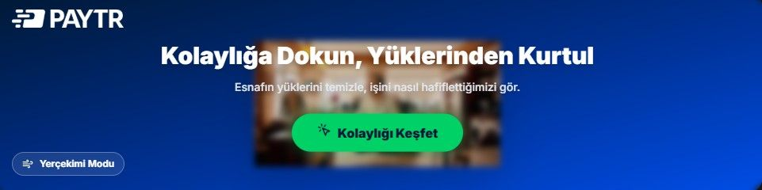
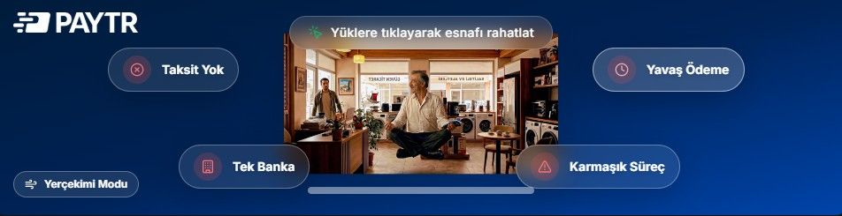
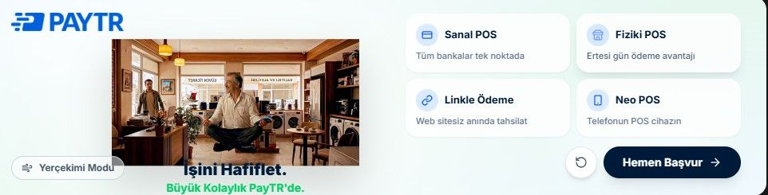
Bölüm 05
Sağlık & Sigorta
Bilgilendirmeyi sade, güven veren bir akışla sunan çalışmalar.
İlaçsız Yaşam
Babalar Günü
Babalar Günü teklifi ilk anda net biçimde sunulurken sağdaki sekmeler ürün açıklaması, kullanım şekli ve faydaları sade bir akışla anlatıyor.
Çalışmayı canlı incele ↗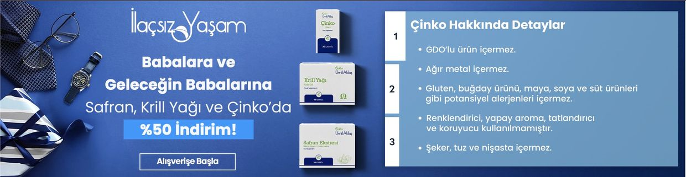
Türkiye Sigorta
Sağlık Ürünleri
Özel, Tamamlayıcı ve Seyahat Sağlık kartlarının üzerine gelindiğinde ilgili ürünün kısa bilgisi dinamik olarak açılıyor; kullanıcı doğru ürüne yönlendiriliyor.
Çalışmayı canlı incele ↗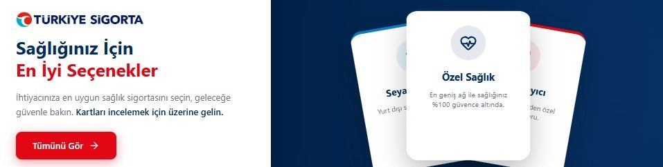
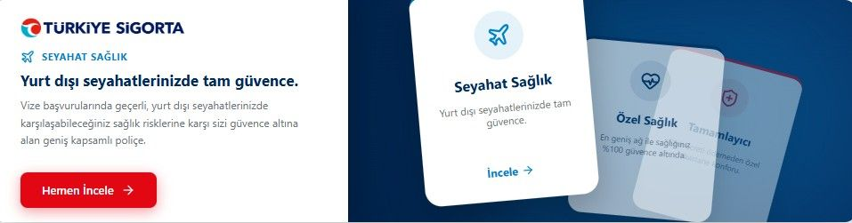
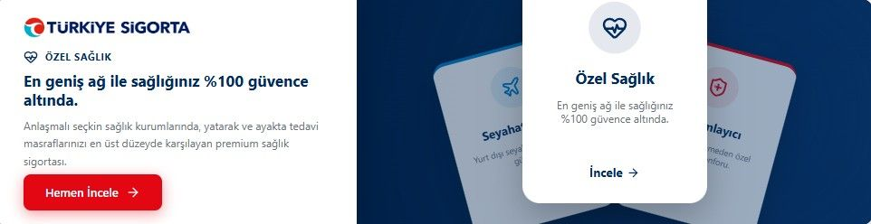
Bölüm 06
Ev Yaşam & Mutfak
Ürün teknolojisini kullanıcının elinde deneyime dönüştüren kurgular.
Dyson
Supersonic r™ Renk Seçici
Kullanıcı renk seçtikçe ürün, arka plan atmosferi ve fiyat bilgisi birlikte değişiyor; kupon kodu kopyalama ve satın alma çağrısıyla 11.11 fırsatı tamamlanıyor.
Çalışmayı canlı incele ↗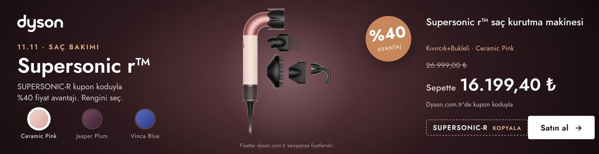
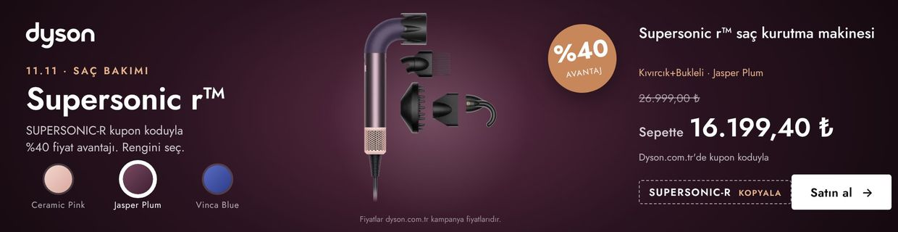
Daikin
Emura III · Serinliği Yüzünde Hisset
32°’lik sıcak bir açılışın ardından kullanıcı imleci gezdirdikçe klimadan çıkan hava akışı ekrana yayılıyor ve sıcaklık düşüyor. Sessizlik ve A+++ verimlilik mesajları serinlik hissiyle birlikte aktarılıyor.
Çalışmayı canlı incele ↗Daikin
Kombi · Sıcaklığı Evinde Hisset
3°’lik soğuk bir sahneyle açılan kurguda kullanıcı imleci gezdirdikçe kombiden yayılan sıcak hava ekranı ısıtıyor. Yoğuşmalı kombinin verimliliği ve sessizliği bu sıcaklık hissiyle anlatılıyor.
Çalışmayı canlı incele ↗Tefal
Kahve mi, Çay mı?
Bölünmüş ekranda kullanıcı tarafını seçiyor: kahveyi seçen Köpüklüm makinelerine, çayı seçen çay makinelerine ulaşıyor. Her iki taraf da 11.11 fiyatları ve kopyalanabilir indirim koduyla tamamlanıyor.
Çalışmayı canlı incele ↗Beko
SuperWash · Kirlet Bakalım
Kullanıcı ipteki kıyafetlere tıklayıp leke atıyor, ardından makine 40 dakikalık programla hepsini temizliyor. Ürün vaadi, oyunun sonucunda kendini kanıtlıyor.
Çalışmayı canlı incele ↗Beko
Direct Cool
90°C’deki yemeği kullanıcı kendisi buzdolabına sürüklüyor; “2 kat daha hızlı soğutma” mesajı ürünün tazeliği koruma gücünü deneyimle anlatıyor.
Çalışmayı canlı incele ↗Tefal
Ice Force
Kullanıcı ürünü imleçle sağa kaydırıyor; hareketle birlikte bıçağın keskinliği ve 10 yıl garanti mesajı öne çıkıyor.
Çalışmayı canlı incele ↗Tefal
Clipso Chef
“Misafirler Kapıda”, “Pilim Bitti”, “Şef Gibi Hisset” senaryolarıyla düdüklü tencerenin hızı ve pratikliği gerçek mutfak anları üzerinden anlatılıyor.
Çalışmayı canlı incele ↗Tefal
Excellence
Isınan tava görseli ve “6 kat daha dayanıklı” mesajıyla açılan deneyim, pişirme sahnesinde güvenli kaplama ve indüksiyon uyumunu gösteriyor.
Çalışmayı canlı incele ↗Bölüm 07
Gıda & Restoran
İştah açan anlatımı oyun ve sipariş aksiyonuyla birleştiren işler.
KFC
KFSOOO · Çifte Cruncher
Sinematik açılış, kişi başı ve toplam fiyatı sayan dinamik sayaçlarla yeni menüyü sahneye taşıyor; kullanıcı menüyü keşfetmeye ve filmi tekrar izlemeye davet ediliyor.
Çalışmayı canlı incele ↗Coffy
Çok da Coffy
Kısa senaryo videosunun ardından kullanıcı kaydırıcıyla “bugün ne kadar Coffy’sin?” sorusunu yanıtlıyor; bardak doluyor ve en yakın şubeye yol tarifi beliriyor.
Çalışmayı canlı incele ↗Banvit
Ramazan Sofrası
Pişirme kâğıdı fırsatı Ramazan temalı video ile sofra deneyimine dönüştü; iki ayrı çağrı kullanıcıyı tarife ya da doğrudan siparişe yönlendiriyor.
Çalışmayı canlı incele ↗Banvit
Lezzeti Yakala
Sosis ya da nugget seçen kullanıcı 10 saniye boyunca düşen ürünleri yakalayıp puan topluyor; oyun sonunda tekrar oynama ya da ürün sayfasına geçiş sunuluyor.
Çalışmayı canlı incele ↗Kraft Heinz
Efsane Lezzet
Ketçap-mayonez, ranch ve trüflü mayonez yemek eşleşmeleriyle sunuluyor; her ürün etkileşiminde “Lezzeti Keşfet” ile ürün sayfasına geçiş.
Çalışmayı canlı incele ↗Fellas
Granola Bar
Üç çeşit aynı karede; ürüne dokunan kullanıcı katkısız, glutensiz ve yüksek lifli içeriği anlatan kişisel bilgi ekranına geçiyor.
Canlı demo talep üzerineZüber
Lezzeti Döndür
“Lezzeti Döndür” butonu Orman Meyveli, Antep Fıstıklı ve Fıstırık varyantları arasında geçiş yaptırıyor; her ekranda “Hemen Al” çağrısı.
Çalışmayı canlı incele ↗Komagene
Ramazan
Üç ürün görseli şehir bazlı iftar sayaçlarıyla aciliyet yaratıyor; QR kod ile uygulamada özel indirim ve “Menüyü Keşfet” ile satış sayfasına yönlendirme.
Çalışmayı canlı incele ↗Yemeksepeti
25. Yıl
“Aklındaysa Kapında” mesajıyla Yemek, Market, Mahalle ve Gel Al sekmeleri markanın tüm hizmetlerini tek mastheadde anlatıyor.
Çalışmayı canlı incele ↗Bölüm 08
Teknoloji & Telekomünikasyon
Yeni nesil hizmetleri oyunlaştırma ve kişiselleştirmeyle anlatan işler.
MediaMarkt
11.11 Çarkı
Kullanıcı çarkı butonla çeviriyor ya da tutup fırlatıyor; denk gelen ürün, kopyalanabilir indirim koduyla birlikte fırsat kartında açılıyor.
Çalışmayı canlı incele ↗MediaMarkt
Sevgililer Günü
“Mutluluğu Garantiye Al” mesajıyla dört kitle tanımı ve yapay zekâ destekli ürün seçimi, kişiye özel hediye önerisini satın almaya bağlıyor.
Çalışmayı canlı incele ↗Turkcell
Turkcell One
Ayrıcalıklar, paketler, popüler içerikler ve avantajlar sekmeleri; kullanıcı paketleri karşılaştırıyor ve tek faturada toplanan platformları keşfediyor.
Çalışmayı canlı incele ↗Turkcell
Superbox 5G
Cihaz çevresindeki etkileşimli kutucuklar ışık hızında bağlantı, gecikmesiz oyun ve kesintisiz 4K yayın avantajlarını gizemli bir keşifle açıyor.
Çalışmayı canlı incele ↗Turkcell
5G Mağaza
Kaydırma butonuyla başlayan 5G deneyimi, kullanıcıyı lokasyonuna en yakın mağazayı bulduğu sayfaya taşıyor.
Çalışmayı canlı incele ↗Turkcell
TV+ Yeni Sezon
Ortadaki ok ile gece ve gündüz görselleri arasında geçiş yapılan kurgu, yeni sezonun başlangıç tarihini dizi oyuncularıyla duyuruyor.
Çalışmayı canlı incele ↗Samsung
S Wallet
Uygulamanın faydası kısa bir mesajla aktarılıyor; ikinci ekranda örnek ödeme akışı gösterilip kullanıcı uygulama indirme sayfasına yönlendiriliyor.
Çalışmayı canlı incele ↗Yandex
Yapay Zekâ mı, Doğal Zekâ mı?
“Hallederiz Abi” kültürünü anlayan bir yapay zekâ esprili bir kontrastla anlatılıyor; bekleme listesi kurgusu erken erişim talebini topluyor.
Canlı demo talep üzerineYandex
Kapadokya
Çay-simit muhabbetinden kahve falına yerel kodlarla konuşan bir yapay zekâ; “Erken Erişim Protokolü” ile kullanıcı deneyime davet ediliyor.
Canlı demo talep üzerineJBL
Tune Flex
Siyah, beyaz, mor ve altın renk seçenekleri dört ayrı ekranda; 76 saat pil ömrü ve gürültü engelleme vurgusu “Satın Al” çağrısına bağlanıyor.
Çalışmayı canlı incele ↗Bölüm 09
Mücevher & Aksesuar
Ürünü kişisel bir hikâyeye dönüştüren premium deneyimler.
Pandora
Moments · Kendi Hikâyeni Tasarla
Kullanıcı bilekliğinin metalini seçiyor, charm’ları tek tek ekliyor ve toplam fiyat anlık güncelleniyor. Tasarlanan bileklik doğrudan satın alma çağrısına dönüşüyor.
Çalışmayı canlı incele ↗DeFacto Pırlanta
Yakından Bak, Gerçeği Gör
Kullanıcı büyüteci pırlantanın üzerinde gezdirdikçe karat, renk ve berraklık bilgileri tek tek onaylanıyor; inceleme tamamlandığında ürünün sertifikası ekrana geliyor. Güven, deneyimle kanıtlanıyor.
Çalışmayı canlı incele ↗Zen Pırlanta
Jennifer Lopez
Jennifer Lopez iş birliğinin yıldız gücü açılış videosuyla öne çıkarken bölünmüş kare yapısı farklı modelleri tek bannerda keşfettiriyor.
Canlı demo talep üzerineBölüm 10
Moda & Tekstil
Koleksiyonları ilgi alanına göre keşfettiren vitrin kurguları.
Adidas
Hotel Superstar
Sokak, Arcade ve Sahne odaları; kullanıcı ilgi alanına göre bir odaya giriyor ve Superstar’ın o dünyadaki hikâyesini keşfedip ürünlere geçiyor.
Çalışmayı canlı incele ↗Altınyıldız Classics
Kasım Kombin Makinesi
Kullanıcı slot makinesinin kolunu çekiyor ya da makaraları kaydırıyor; üst ve alt parçalar dönerek 25 farklı kombinden birini oluşturuyor. Her parça kendi “Satın Al” çağrısıyla ürün sayfasına bağlanıyor.
Çalışmayı canlı incele ↗Civil
30. Yıl Fırsat Kataloğu
Kapağa dokunan kullanıcı dijital bir katalog açıyor; sayfaları çevirdikçe bebek giyimden çocuk montlarına kadar kategoriler, başlangıç fiyatları ve ürün kartlarıyla birlikte sırayla beliriyor.
Çalışmayı canlı incele ↗Brooks Brothers
Sonbahar
Klasik modeller, ütü gerektirmeyen teknoloji ve ikonik parfümler üç ayrı bölümde; her bölüm kendi “Keşfet” çağrısıyla ilgili ürün grubuna açılıyor.
Çalışmayı canlı incele ↗Bölüm 11
Seyahat & Turizm
Rotayı, destinasyonu ve markanın hikâyesini yaşatan çalışmalar.
Turkish Airlines
Official Store
Biniş kartı temalı vitrinde model uçaklar, çocuk pilot tulumları ve sallanabilen Göbeklitepe kar küresi; kullanıcı kaydırarak ürünleri keşfedip mağazaya geçiyor.
Çalışmayı canlı incele ↗Pegasus
Senin Yaz Rotan Neresi?
Yurt içi, Avrupa ve Kıbrıs kartları üzerine gelindiğinde genişleyip başlangıç fiyatını ve bilet çağrısını gösteriyor. Rota seçimi tek harekette.
Çalışmayı canlı incele ↗Pegasus
Yolculuk Bir Tatla Başlar
Lezzet, doğa, tarih ve kültür temalı destinasyonlar hikâye akışında birbirine bağlanıyor; final ekranı “Peki şimdi nereye?” sorusuyla rotayı kullanıcıya bırakıyor.
Çalışmayı canlı incele ↗Pegasus
Rotanı Çevir
Uçak penceresindeki buğuyu silen kullanıcı kampanyalı rotaları keşfediyor; akan yıldızlarla uçuş deneyimi simüle ediliyor.
Çalışmayı canlı incele ↗Pegasus
Yaz Kampanyası
İstanbul çıkışlı yaz destinasyonları dinamik görsellerle akarken her rota için güncel fiyat ve “Biletini Al” çağrısı sunuluyor.
Çalışmayı canlı incele ↗Bölüm 12
Gayrimenkul, Kurumsal & Kamu
Projeyi, hizmeti ve kurum vizyonunu etkileşimli şekilde anlatan işler.
Nurol GYO
Urla 77
Ege’nin kalbindeki müstakil yaşam projesi, sesli kontrol edilebilen tanıtım videosuyla havadan görünümden havuzlu villalara ve iç mekânlara uzanan bir hikâyeyle anlatılıyor; detaylı bilgi çağrısı ve iletişim numarası her an görünür.
Çalışmayı canlı incele ↗Kocaeli Belediyesi
7. Yıl
Lokasyon hedeflemeli kurguda vizyon mesajının ardından Yatırımlar, Hizmetler, Haberler, Kültür-Sanat ve Gençlik-Spor sekmeleri etkileşimli bilgi sunuyor.
Çalışmayı canlı incele ↗Bir sonraki kampanyanızı
birlikte planlayalım.
Teşekkürler